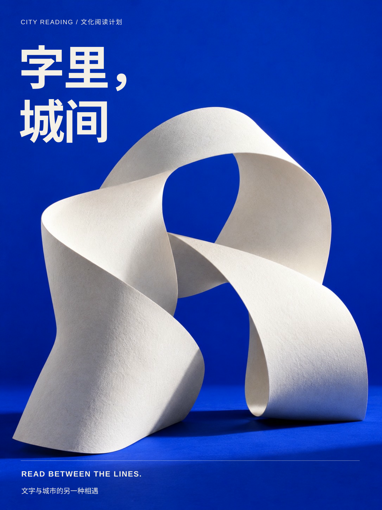

02 / 文化活动海报 / 2026
把城市读慢一点
以一本展开的书，连接阅读与城市生活。
项目性质
虚构品牌概念练习
设计应用
文化海报 / 阅读主题活动
创作方式
AI 辅助概念初稿

设计任务
为虚构的周末阅读交换会设计招募海报。目标是让远距离阅读也能快速识别主题。
版式与视觉
大字号朱红中文标题与纸色底形成鲜明层级。书本的斜向姿态打破版面的静态感，底部保留明确的活动说明。
配色
#eee9db#d83e2b#232321源文件与创作说明
图形由本次 AI 辅助制作，SVG 保留矢量结构与文字。未使用真实客户标志、外部照片或未核实的业务数据。尚未补充申请人的手稿及真实修改记录。
下载 SVG 源文件 ↗
此案例目前展示主视觉方向。多尺寸适配、可画原生文字编辑和完整模板检查尚未完成，不应作为已经验收的成套模板。